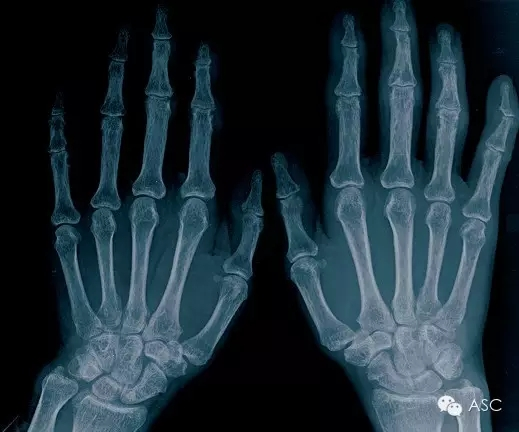

互惠动态
|
|
孩子的成长，离不开父母的熏陶
提示：点击上方"ASC"↑免费订阅本刊
2015年10月，中国籍药学家，屠呦呦，获诺贝尔生理学或医学奖，成为继莫言之后，第二位中国籍诺贝尔奖获得者，是中医药走向世界的一个荣誉。
诺贝尔奖（瑞典语：Nobelpriset，挪威语：Nobelprisen）是一项由瑞典皇家科学院、瑞典学院、卡罗琳学院和挪威诺贝尔委员会颁发给对化学、物理、文学、和平和生理及医学这五方面有着杰出贡献的人士或组织的奖项。截至2012年，已有839名人士和24个组织获得了诺贝尔奖，包括69名诺贝尔经济学奖得主。而在这800多名，竟有半壁江山属于德国，到底是什么样的教育，成就了如此之多的杰出人物呢？下面，请随小编一起来欣赏一些名人的小故事吧！
特奥多尔·蒙森(Theodor Mommsen 1817-1903)，德国历史学家，因《罗马史》获1901年诺贝尔文学奖。1817年，蒙森出生于德国茄尔丁，母亲是一位教师，负责蒙森的教育，是一个真正的知识女性，对蒙森产生了巨大的影响，主要表现在学识和人格两方面。
在学识上，母亲对文学和史学有着不同程度的了解和思考，并且有着很高的文化素养。她常常对蒙森说：“我们的国家，跟罗马帝国有着极深的渊源，可是，谁还记得古罗马帝国光辉灿烂的历史呢？这不是不令人扼腕叹息的！”正是这种强烈浓厚民族感情的叙述时时打动着蒙森幼小的心灵，使蒙森很早就对历史产生了浓厚的兴趣，并决定要以古罗马史为自己的研究方向。
在人格上，他母亲为人正直善良，把对真理的追求放在自己人生当中一个相当重要的地位上。蒙森从小接受母亲的熏陶，即使是在铁血宰相俾斯麦面前亦是一身正气，敢于直接对其抨击和批评。最终在一次内阁会议上，俾斯麦从自己的皮包里拿出一本《罗马史》，毕恭毕敬对蒙森说：“您的著作《罗马史》我再三拜读，你看，封皮都磨破了。”蒙森终于以自己的人格魅力征服了铁血宰相，而这一切都是与母亲的熏陶分不开的。
威廉·伦琴（Wilhelm Röntgen 1845 -1923)，德国物理学家，由于发现了X射线，为开创医疗影像技术铺平了道路，1901年被授予首次诺贝尔物理学奖。这一发现不仅对医学诊断有重大影响，还直接影响了20世纪许多重大科学发现。
伦琴于1845年3月出生于德国下莱茵省鲁尔河流边缘的一座小城伦普，祖父是当地福音教会的会长，父亲是一个殷实的商人和呢绒厂主，母亲出生于荷兰的阿姆斯特丹，是一位聪明的、深知事理的女人，她的一言一行在伦琴童年幼小的心灵留下了深刻的印记。
伦琴的求学道路并不算顺利。起初，由于在学校并没有表现出任何的才能，父母是希望他从商，继承家业的。而命运并未按照父母的意愿安排。1862年，伦琴在一家技术实科学校被诬告画了一位老师的漫画，从而被不公正地开除学籍。1865年，在舅舅的帮助下，伦琴以旁听生的身份进入乌德勒支大学。为了能进大学深造，他又去了瑞士的苏黎世，因为那里不需要中学毕业证书，但要进行一次入学考试。同年11月，伦琴进入苏黎世大学学习机械工程。伦琴在苏黎世工业大学的三年中，埋头攻读数学、物理学、机械制图、机械工艺、水文学、热力学和冶金等专业课程，刻苦精神令人佩服。而每当他遇到困难时总会情不自禁地想到：“在这样的困境下我母亲会怎样做或怎样说呢？”可见，母亲对伦琴的影响力是巨大的。

ASC视角：父母是孩子的启蒙老师，孩子的成长与父母有着重大的关联，孩子的教育更是每个父母亲毕生的事业。给孩子一个怎样的童年，甚至是一个信念，都会有可能影响孩子一生的理念。

ASC国际互惠生项目公众号ASCCENTER
互惠生最早起源于英、法、德国等自发的青年活动，是指给来自全世界的青年提供一个寄住在他国家庭里体验文化学习语言的机会，如今我们把国外互惠生请来家庭里，照顾自家的孩子，从小培养外文的语言环境，为孩子出国，全家移民打下优良基础，关注个【公众微信号】ASCCENTER了解更多国外有趣资讯。
ASC国际互惠生客服号ASC-CENTER
24小时客服个人微信号，对接家庭与互惠生之间的问题，对互惠生项目有陌生不熟悉或者想了解更多信息的可以关注【个人微信号】ASC-CENTER与客服详细交流。